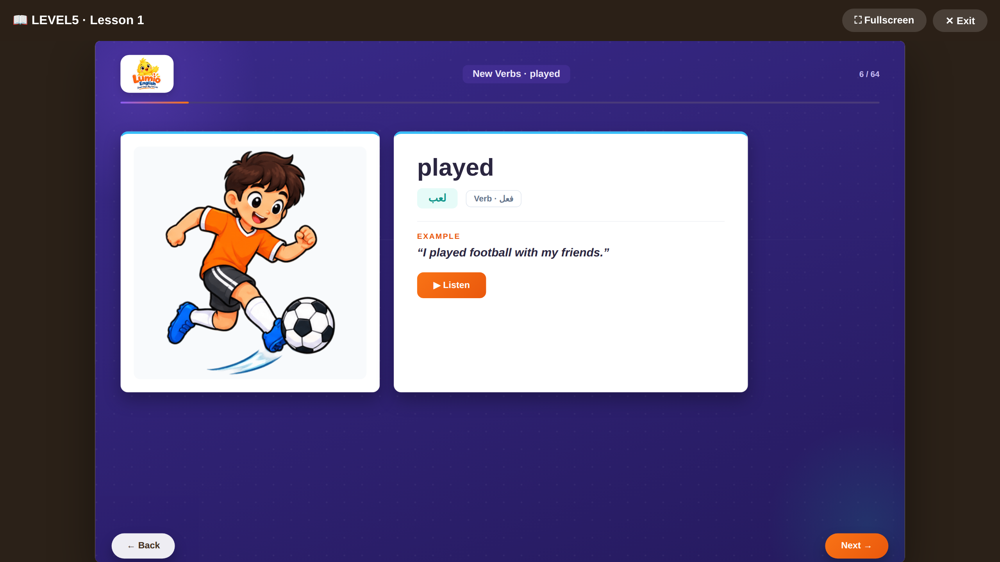

The past tense arrives here: what happened, when, and why. Your child moves from describing the present to genuinely telling stories -- their weekend, a trip, a party, a mistake -- in connected, real narrative.
By the end of this level, your child can:
- Talk about what happened yesterday or last weekend
- Ask and answer questions in the past ("Did you...?")
- Describe how something was and why it happened
- Tell a story with sequence ("and then...")
- Describe what was happening at a specific moment
- Talk about a trip, a party, or a memorable day
- Interview someone and recap a story
Sample vocabulary
proudفخورnervousمتوترpackedحزمflewطارsuitcaseحقيبة سفرguestsضيوف
Grammar
Past simple, past questions, past continuous, and connecting words -- one grammar point per lesson with its own Grammar Hub rule page, building toward real storytelling.

A real vocabulary slide from Lesson 1 — picture, Arabic, example sentence and audio